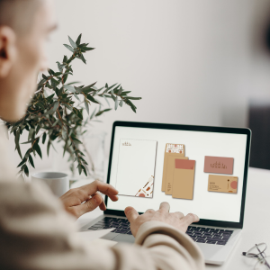
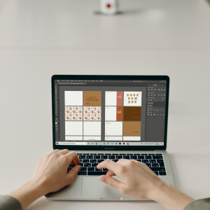
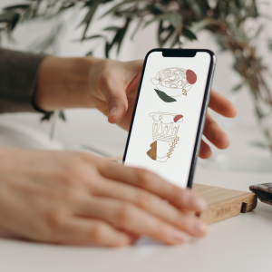

Identidad Corporativa
Construcción de Marca
La finalidad de esta etapa es construir una buena comunicación con usted, donde se tenga en cuenta sus opiniones y sugerencias para la elaboración de su marca, logrando de esta forma reflejar la finalidad de su empresa o negocio por medio de una correcta paleta de colores y gráficos.
Papelería
La papelería corporativa transmite la imagen y la primera impresión de su empresa, por lo cual, es importante elaborar un diseño distintivo y creativo por medio de gráficos y textos para comunicar, transmitir y ayudar a construir una idea en el usuario sobre los objetivos y valores de su compañía.

Manual de Identidad
El manual de identidad corporativa recoge los diferentes elementos que reúne su marca y de esta forma permite que sea clara y homogénea en cualquier tipo de soporte, garantizando una comunicación visual coherente y permitiendo que sus clientes la identifiquen y la reconozcan.

Diseño de Sistemas de Información Gráfica

Set de Iconos
La imagen habla por sí sola o en este caso los iconos. Muchas veces nos sentimos frustrados porque no encontramos iconos que identifiquen los valores de nuestra empresa o negocio al momento de representar un servicio, función o proceso. Aquí te ayudare a solucionar este problema.
Sistema de Señalética
El sistema de señalética ayuda a los usuarios a identificar y facilitar su acceso a los servicios en un entorno. Si la labor de la señalética es efectiva, su público quedará satisfecho y tendrá una buena experiencia de usuario, lo que se constituye en una razón de peso para que deseen regresar.
Si deseas más información, puedes contáctarme a travéz de los siguientes enlaces.